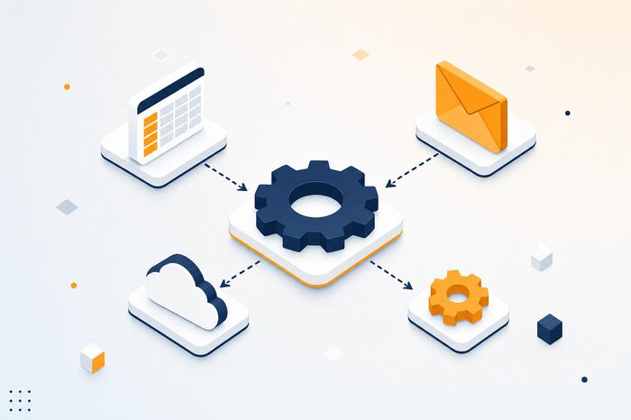
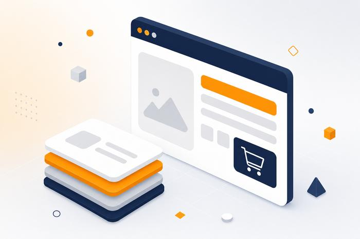

Software su misura
Applicazioni e strumenti sviluppati da zero attorno alle esigenze reali della tua attività.
Sono Nello Montaquila, freelance specializzato in software e prodotti digitali. Progetto strumenti semplici, solidi e su misura per aiutarti a lavorare con più efficienza, precisione e libertà.
Dalla piccola automazione al software su misura: ogni soluzione nasce da un problema reale, non da un modello preconfezionato.
Applicazioni e strumenti sviluppati da zero attorno alle esigenze reali della tua attività.
Riduco le attività ripetitive con automazioni e integrazioni tra gli strumenti che usi già.
Template, plugin e mini-tool pronti all'uso per chi vuole risultati rapidi e affidabili.
Analizzo il tuo flusso di lavoro e ti indico dove la tecnologia può davvero fare la differenza.
Che tu abbia già un'idea precisa o solo un problema da risolvere, si parte sempre da una conversazione.
Un tool digitale mirato a risolvere un problema specifico del tuo lavoro quotidiano.
Software o piattaforma digitale progettata e sviluppata interamente attorno alla tua attività.
Aggiornamenti, nuove funzionalità e assistenza continua per far crescere lo strumento nel tempo.
Mi scrivi cosa ti serve o cosa non funziona nel tuo flusso di lavoro attuale.
Ti presento una soluzione concreta, con tempi e costi definiti, senza sorprese.
Progetto e realizzo lo strumento, con aggiornamenti regolari sull'avanzamento.
Ricevi il tuo strumento pronto all'uso, con assistenza per i primi passi.
Aquilix nasce per rendere la tecnologia uno strumento accessibile e affidabile per chiunque voglia far crescere la propria attività.
La nostra missione è progettare strumenti digitali semplici, solidi e su misura, che permettano a professionisti e piccole imprese di lavorare con più efficienza, precisione e libertà, senza mai perdere di vista l'affidabilità.
Ogni progetto parte da un ascolto attento: capisco prima il tuo modo di lavorare, poi costruisco lo strumento giusto, senza soluzioni preconfezionate.
Concept illustrativi del tipo di lavoro che realizzo — verranno sostituiti con casi reali non appena i primi progetti saranno consegnati.
Un pannello di controllo unico per monitorare progetti, scadenze e clienti, pensato per sostituire fogli di calcolo sparsi e comunicazioni via email.

Collegamento automatico tra il modulo ordini, la fatturazione e l'invio delle email di conferma, per eliminare le operazioni manuali ripetitive.

Un pacchetto scaricabile con struttura, componenti e documentazione, pensato per essere personalizzato e usato da subito senza competenze tecniche.
"Cercavo un software su misura per il mio flusso di lavoro e Nello ha capito subito le mie esigenze. Ora ho uno strumento che si adatta a me, non il contrario."
"Grazie all'automazione che mi ha creato, ho eliminato ore di lavoro ripetitivo ogni settimana. I dati passano da un tool all'altro senza che io debba più muovere un dito."
"Il prodotto digitale che ho acquistato era pronto all'uso e ben documentato: l'ho integrato nel mio lavoro in un pomeriggio, senza bisogno di assistenza."
"La consulenza tecnica mi ha aiutato a capire quale soluzione aveva davvero senso per la mia attività, prima ancora di iniziare a spendere in sviluppo. Chiarezza e onestà su ogni scelta."
Software su misura, automazioni tra strumenti esistenti e piccoli prodotti digitali pensati per semplificare attività ripetitive. Ogni progetto viene valutato singolarmente in base alle esigenze reali.
Dipende dalla complessità: uno strumento mirato può richiedere pochi giorni, un progetto completo alcune settimane. Ti fornisco sempre una stima chiara prima di iniziare.
Sì. Ogni progetto include un periodo di assistenza post consegna e puoi scegliere un piano di manutenzione continuativa se hai bisogno di aggiornamenti regolari.
Mi scrivi una breve descrizione del problema o dell'idea. Ci parliamo per capire obiettivi e priorità, poi ricevi una proposta scritta con tempi e costi.
Raccontami la tua attività: insieme troviamo lo strumento digitale giusto per farla crescere.